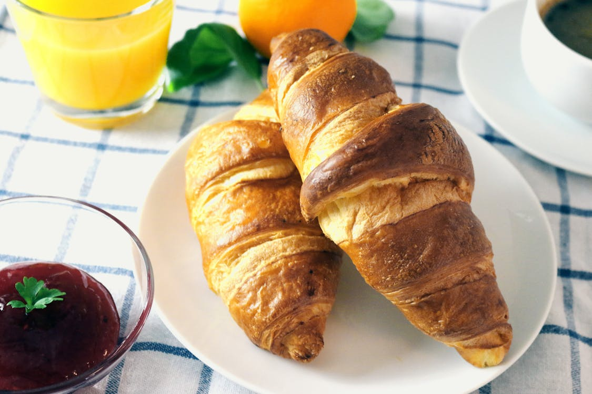
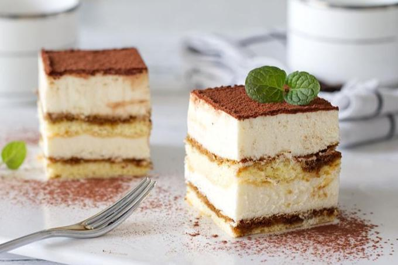
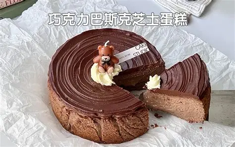
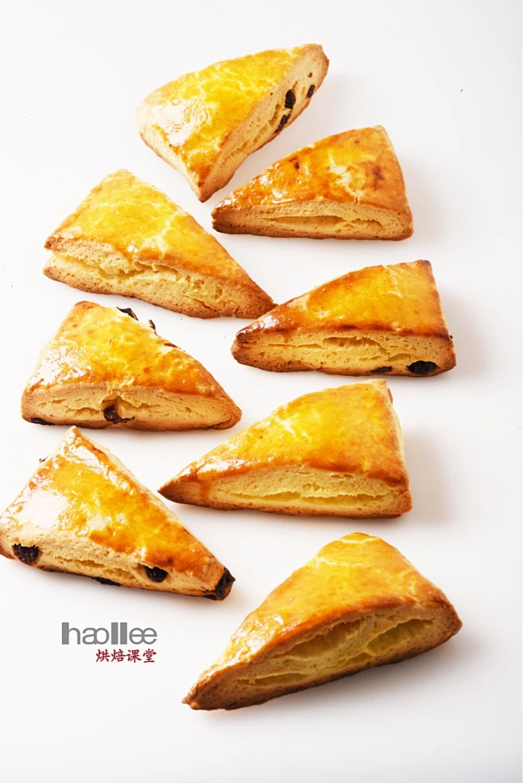

没有甜点的下午茶是不完整的。恰当的搭配能放大咖啡的风味。

经典的法式早餐搭配。酥脆掉渣的可颂蘸入绵密的奶泡中，黄油的香气与牛奶咖啡完美融合，温暖治愈。

"带我走"的浪漫。手指饼干吸饱了咖啡酒液，马斯卡彭芝士入口即化，与Espresso的苦味形成绝妙平衡。

巴斯克芝士蛋糕厚重浓郁，搭配酸质明亮、花香四溢的浅烘手冲，刚好可以解腻，让味蕾瞬间清爽。

扎实的司康涂抹上凝脂奶油和果酱，搭配清爽冰凉的冷萃咖啡，是炎炎夏日午后的最佳选择。
虽然甜点美味，但作为大学生也要注意糖分摄入哦。建议下午4点前食用甜点，给予身体足够的代谢时间。
如果你在进行减脂，可以选择全麦贝果代替起酥类面包，或者选择黑巧克力作为咖啡的配搭。